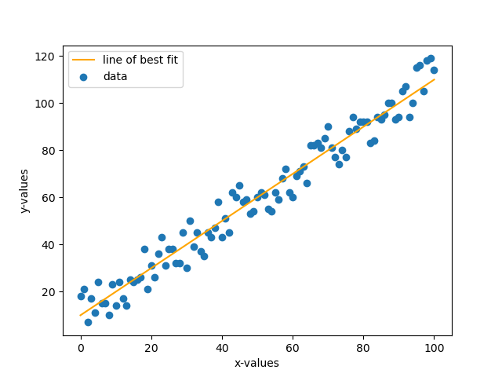
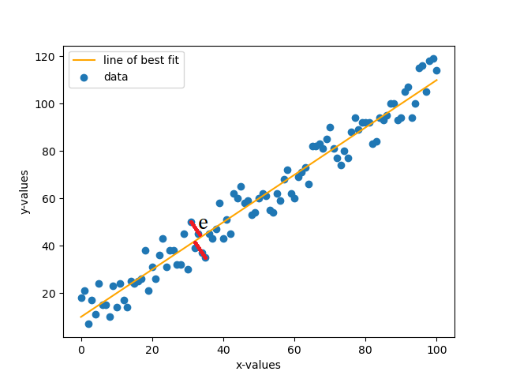

>_ Ariq's Blog...
Hello everyone! Today, as the title suggests, we are going to talk about linear regression and what it means and how it works.
Firstly let us talk about what regression does. Regression basically, in a nutshell, finds the line of best fit in a given series of data. Suppose you are given some data and you'd like explore/model how it behaves. In that case you'd first plot the data on a graph and recognize its pattern. Some tend to show linear patterns while others show expotential and so on.
How does it do that exactly?
you might ask. Firstly we'll have to talk about the two different ways one might perform regression. A common method is the statistical approach where by a system of equations is solved and we end up with our coefficients
for our model. And the other approach is the machine learning approach where we train
our model and make it learn iteratively. Eventually both model will reproduce approximately the same values for our coefficients. But enough of this coefficients mumbo jumbo. What model are we even dealing to begin with? Well, if it's not obvious already, we are dealing with a linear model. What does that mean? This means we go back to our school days where we learned \(y = ax + b\). Where \(a\) is the gradient and \(b\) is the y-intercept. In this case we would be trying to get our line of best fit using this equation on some data we are interested in.
An example series of data can be shown below
So now if we want to have the line of best fit, we could try and estimate it to be something like the orange line shown below.

Now one might be asking as to how we arrive at this line. Well, linear regression is the answer. To perform this, we'll consider 2 approaches as stated above. Both approaches however do very similar things. Let us consider the statistical approach first. Suppose we have our model in the form (which calculates the predicted value) \(\hat{y} = ax + b\) and our actual value \(y\). Now to calculate the error \(e\) between the two, we simply subtract and get \(e = y - \hat{y}\), which simplifies to \(e = y - (ax + b)\). Now to minimize the error, we will use a technique known as Least Squares Method (LSM). In this technique we basically take the sum of the square of the error, take the derivatives, equate the derivatives to zero so that error is at minimum and solve for the coefficients.

Now let us look at the actual step by step process as to how we can solve such a problem.
Step 1 We square the error \(e\) and take the sum of all the errors.
$$ E = \sum_{i=0}^n e_i^2 $$ $$ E = \sum_{i=0}^n {(y_i - \hat{y_i})}^2 $$ $$ E = \sum_{i=0}^n {[y_i - (ax_i + b)]}^2 $$
Step 2 We are now going to take the partial derivatives of our equation above, once with respect to \(a\) and once with \(b\). Therefore taking the two derivatives, we have:
$$ \frac{\partial E}{\partial a} = \sum_{i=0}^n 2[y_i - (ax_i + b)]\cdot(-x_i) $$ $$ \frac{\partial E}{\partial a} = -2\sum_{i=0}^n [y_i - (ax_i + b)]\cdot(x_i) $$ $$ \frac{\partial E}{\partial a} = -2\sum_{i=0}^n [x_i y_i - ax_i^2 - bx_i] $$ and... $$ \frac{\partial E}{\partial b} = \sum_{i=0}^n 2[y_i - (ax_i + b)]\cdot(-1) $$ $$ \frac{\partial E}{\partial b} = -2\sum_{i=0}^n [y_i - ax_i - b] $$
Now that we have the required derivatives, we equate them to zero to make the error have the minimum value. Hence we get the following equations.
$$ \frac{\partial E}{\partial a} = 0 $$ $$ -2\sum_{i=0}^n [x_i y_i - ax_i^2 - bx_i] = 0 $$ $$ \sum_{i=0}^n [x_i y_i - ax_i^2 - bx_i] = 0 $$ and... $$ \frac{\partial E}{\partial b} = 0 $$ $$ -2\sum_{i=0}^n [y_i - ax_i - b] = 0 $$ $$ \sum_{i=0}^n [y_i - ax_i - b] = 0 $$
Step 3 Rearranging the equations we end up with a set of 2 simultaneous equations for which we have to solve to find our coefficients \(a\) (the slope) and \(b\) (the y-intercept). The equations are:
$$ a\sum_{i=0}^n x_i + nb = \sum_{i=0}^n y_i $$ $$ a\sum_{i=0}^n x_i^2 + b\sum_{i=0}^nx_i = \sum_{i=0}^n x_i y_i $$
Now all that is left is to plug in our \(x\) and our \(y\) data and solve for the values of \(a\) and \(b\). If one is able to substitute one equation in the other and do further simplifications, then they may end up with the following equations for the coefficients. This will avoid having to solve the simultaneous equations and just plug in the values directly.
$$ a = \frac{\sum{x}\sum{y} - n\sum{xy}}{{(\sum{x})}^2 - \sum{x^2}} $$ $$ b = \frac{\sum{y} - a\sum{x}}{n} $$
Now this about sums up what we need to know about regression in statistical term. Now we are going to focus on regression in Machine Learning approach. In ML, we often hear about the term training a model
. What this basically means is that, for example, we have a baby and the baby doesn't know anything. The baby tries and tries to do better at something each time, so it learns each time from its mistake and tries not to repeat it. Same thing we are going to discuss here. We are going to look at the learning algorithm of linear regression in machine learning.
Now this concept is important before we proceed any further. What the gradient descent formula does is basically minimizes the gradient of the cost function of a model. Our cost function, for our sake, is the function defined by \(E\) in the previous approach. It minimizes the gradient on each iteration of the SGD function. Note that the name says Stochastic
, meaning when gradient descends, it does so in a random manner. Now how does this function actually look like? It's like how it is below. (This is the general formula)
$$ \theta := \theta - \alpha{\nabla}Q_i(\theta) $$
Now \({\nabla}Q_i(\theta)\) basically represents the partial derivative of our cost function with respect to the weight we are interested in, \(\theta\). Our task is made easier as we have calculated the partial derivatives of each of the weights \(a\) and \(b\) in the previous approach. All that is left for us is to plug in the derivatives. The \(i\) emphasizes that we repeat this with each value in our data, i.e. \(\hat{y_i}\) and \(y_i\). Now \(\alpha\) is known as the learning rate. Learning rate is basically the step size at which the gradient descent function approaches the minimum value e.g. 0.01.Note that the \(:=\) sign says that it's an iterative function, meaning we retain the value from the current calculation for the next iteration. The gradient descent function basically updates
our coefficients to become better and more accurate over time.
Now that we have gotten the prerequisites, let us try and see how our update
functions are going to look like. Let us notice one thing from our previous equations that is \([\hat{y_i} - (ax_i + b)]\) is actually our original error term \(e\) so \(-2\sum [\hat{y} - (ax + b)]\cdot(x)\) becomes \(-2\sum e\cdot(x)\), for example.
$$ a := a + {\alpha}e_i x_i $$ $$ b := b + {\alpha}e_i $$
NOTE that we had a \(-2\) in our partial derivatives, so the constant 2 was ignored but notice that the negative sign yielded in the latter term being added instead of subtracted. Now the above explained it mathematically. How about we try and see in pseudocode how a code implementation could be like? The snippet below shows exactly that. (given x and y are lists containing their respective values).
alpha = 0.01
a = 0
b = 0
FOR i in length(x)*integer_constant
idx = i%length(x)
pred = a*x[idx] + b
error = y[idx] - pred
a = a + alpha*error*x[idx]
b = b + alpha*error
END FOR
Now from the code above our simple predicting formula would be like our regression model y = ax + b. Also note that the integer_constant makes sure that the iterations (epochs) happen many many times. The more the epochs, the better the accuracy, but the more time it takes to train the model.
CONCLUSION This was just my take on explaining what linear regression is like coming from a perspective of an ML enthusiast and a mathematician. Hope I was able to explain something without confusing most of the public. If you have any queries or find any mistake please contact me using my email provided in the relevant page. Thank you and happy coding!